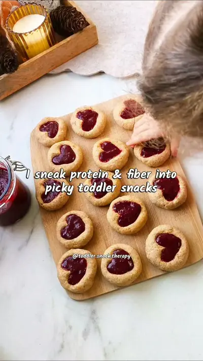

Soft chickpea heart cookies

Ingredients
- 1 cup (160g) cooked chickpeas
- 1 1/4 cup (150g) whole wheat flour
- 2 tbsp softened butter
- 2 tbsp honey
- 1 egg
- 1/4 tsp cinnamon
- 1/4 tsp baking powder
Steps
- Blend chickpeas, butter, honey, and egg until smooth.
- Add flour, cinnamon, and baking powder; mix into a soft dough.
- Form dough into small balls, flatten slightly.
- Press a small heart in the center with your fingertip.
- Bake at 175°C (350°F) for 20 minutes, golden and soft.
- Fill the hearts with homemade fiber rich jam once cooled.
- Tip: Store in an airtight container for up to 3 days.
Recipe text as written by @toddler.snack.therapy on Instagram. Open original